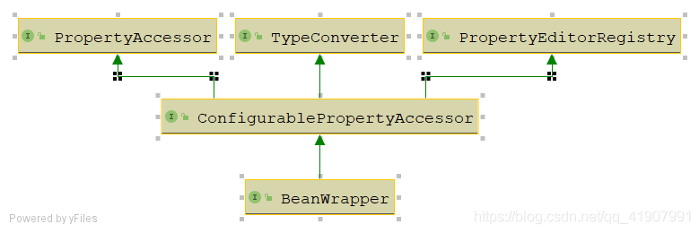
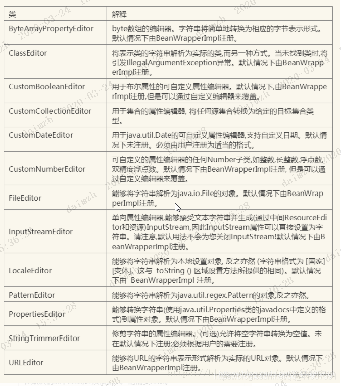

BeanWrapper
https://blog.csdn.net/qq_41907991/article/details/105214244
BeanWrapper整体UML图：

右边部分
先看BeanWrapper能做啥，有什么功能，即看实现了什么接口（右边部分）：

- PropertyEditorRegistry（属性编辑器注册器）：注入属性编辑器（PropertyEditor）
- PropertyAccessor（属性访问器）
- TypeConverter（类型转换器）
- ConfigurablePropertyAccessor
- BeanWrapper：BeanWrapper是Spring中一个很重要的接口，Spring在通过配置信息创建对象时，第一步首先就是创建一个BeanWrapper。
PropertyEditorRegistry（属性编辑器注册器）
// 这个接口的功能很简单，就是用来注入属性编辑器（PropertyEditor），那么什么是PropertyEditor呢？
public interface PropertyEditorRegistry {
void registerCustomEditor(Class<?> requiredType, PropertyEditor propertyEditor);
void registerCustomEditor(@Nullable Class<?> requiredType, @Nullable String propertyPath, PropertyEditor propertyEditor);
@Nullable
PropertyEditor findCustomEditor(@Nullable Class<?> requiredType, @Nullable String propertyPath);
}
PropertyEditor是JavaBean规范定义的接口，这是java.beans中一个接口，其设计的意图是图形化编程上，方便对象与String之间的转换工作，
而Spring将其扩展，方便各种对象Object与String之间的转换工作。
Spring中对PropertyEditor使用的实例:
- 我们在通过XML的方式对Spring中的Bean进行配置时，不管Bean中的属性是何种类型，都是直接通过字面值来设置Bean中的属性。那么是什么在这其中做转换呢？这里用到的就是PropertyEditor
- SpringMVC在解析请求参数时，也是使用的PropertyEditor
Spring内置的PropertyEditor (将String转换成各种Object):

PropertyAccessor（属性访问器）
public interface PropertyAccessor {
// 嵌套属性的分隔符,比如"foo.bar"将会调用getFoo().getBar()两个方法
String NESTED_PROPERTY_SEPARATOR = ".";
char NESTED_PROPERTY_SEPARATOR_CHAR = '.';
// 代表角标index的符号 如person.addresses[0] 这样就可以把值放进集合/数组/Map里了
String PROPERTY_KEY_PREFIX = "[";
char PROPERTY_KEY_PREFIX_CHAR = '[';
String PROPERTY_KEY_SUFFIX = "]";
char PROPERTY_KEY_SUFFIX_CHAR = ']';
// 该属性是否可读/可写，不存在则返回false
boolean isReadableProperty(String propertyName);
boolean isWritableProperty(String propertyName);
// 获取/设置属性的方法，基本见名知意
@Nullable
Class<?> getPropertyType(String propertyName) throws BeansException;
@Nullable
TypeDescriptor getPropertyTypeDescriptor(String propertyName) throws BeansException;
@Nullable
Object getPropertyValue(String propertyName) throws BeansException;
void setPropertyValue(String propertyName, @Nullable Object value) throws BeansException;
void setPropertyValue(PropertyValue pv) throws BeansException;
void setPropertyValues(Map<?, ?> map) throws BeansException;
void setPropertyValues(PropertyValues pvs) throws BeansException;
void setPropertyValues(PropertyValues pvs, boolean ignoreUnknown)
throws BeansException;
void setPropertyValues(PropertyValues pvs, boolean ignoreUnknown, boolean ignoreInvalid)
throws BeansException;
}
什么是PropertyValue？
当设置属性值时，少不了两样东西：
属性访问表达式：如listMap[0][0]
属性值：ProperyValue对象就是用来封装这些信息的。如果某个值要给赋值给bean属性，Spring都会把这个值包装成ProperyValue对象。
TypeConverter（类型转换器）
// 定义了进行类型转换时的一些规范，就像名字定义的那样，主要用来做类型转换 public interface TypeConverter { // 将指定的值转换成指定的类型 @Nullable <T> T convertIfNecessary(@Nullable Object value, @Nullable Class<T> requiredType) throws TypeMismatchException; // 相对于上面这个方法下面这个三种方法能处理转换过程中的泛型 @Nullable <T> T convertIfNecessary(@Nullable Object value, @Nullable Class<T> requiredType, @Nullable MethodParameter methodParam) throws TypeMismatchException; @Nullable <T> T convertIfNecessary(@Nullable Object value, @Nullable Class<T> requiredType, @Nullable Field field) throws TypeMismatchException; default <T> T convertIfNecessary(@Nullable Object value, @Nullable Class<T> requiredType, @Nullable TypeDescriptor typeDescriptor) throws TypeMismatchException { throw new UnsupportedOperationException("TypeDescriptor resolution not supported"); } }ConfigurablePropertyAccessor
public interface ConfigurablePropertyAccessor extends PropertyAccessor, PropertyEditorRegistry, TypeConverter { // ConversionService：进行转换的业务类，转换系统的入口 void setConversionService(@Nullable ConversionService conversionService); @Nullable ConversionService getConversionService(); // 进行属性编辑是是否返回旧的值 void setExtractOldValueForEditor(boolean extractOldValueForEditor); boolean isExtractOldValueForEditor(); // 当设置（dog.name）这种嵌套属性的情况下，如果dog属性为null是否会报错 // 为true的话不会，为false会抛出NullValueInNestedPathException void setAutoGrowNestedPaths(boolean autoGrowNestedPaths); boolean isAutoGrowNestedPaths(); }BeanWrapper
// Spring低级JavaBeans基础设施的中央接口。通常来说并不直接使用BeanWrapper，而是借助BeanFactory或者DataBinder来一起使用,BeanWrapper对Spring中的Bean做了包装，为的是更加方便的操作Bean中的属性 public interface BeanWrapper extends ConfigurablePropertyAccessor { void setAutoGrowCollectionLimit(int autoGrowCollectionLimit); int getAutoGrowCollectionLimit(); // 获取包装的Bean Object getWrappedInstance(); // 获取包装的Bean的class Class<?> getWrappedClass(); // 获取所有属性的属性描述符 PropertyDescriptor[] getPropertyDescriptors(); // 获取指定属性的属性描述符 PropertyDescriptor getPropertyDescriptor(String propertyName) throws InvalidPropertyException; }
PropertyDescriptor：属性描述符，能够描述javaBean中的属性，通过属性描述符我们能知道这个属性的类型，获取到操纵属性的方法（getter/setter）
接口功能总结
- BeanWrapper接口自身对Bean进行了一层包装。
- 另外它的几个通过间接继承了几个接口，所以它还能对Bean中的属性进行操作。PropertyAccessor赋予了BeanWrapper对属性进行访问及设置的能力，
- 在对Bean中属性进行设置时，不可避免的需要对类型进行转换，而恰好PropertyEditorRegistry，TypeConverter就提供了类型转换的统一约束。
左边部分
唯一实现类BeanWrapperImpl到底是个啥，看继承关系（左边部分）
PropertyEditorRegistrySupport
这个类最大的作用在于管理PropertyEditor,添加了很多的默认的PropertyEditor。在PropertyEditorRegistry的基础上做了进一步的扩展，提供的还是PropertyEditor注册的功能。
TypeConverterSupport
public abstract class TypeConverterSupport extends PropertyEditorRegistrySupport implements TypeConverter {
@Nullable
TypeConverterDelegate typeConverterDelegate;
......
}
这个接口实现了TypeConverter，所以它具有类型转换的能力，而它这种能力的实现，依赖于它所持有的一个TypeConverterDelegate。
class TypeConverterDelegate {
private final PropertyEditorRegistrySupport propertyEditorRegistry;
@Nullable
private final Object targetObject;
public <T> T convertIfNecessary(@Nullable String propertyName, @Nullable Object oldValue, @Nullable Object newValue,
@Nullable Class<T> requiredType, @Nullable TypeDescriptor typeDescriptor) throws IllegalArgumentException {
// 查看是否为当前这个类型配置了定制的PropertyEditor
PropertyEditor editor = this.propertyEditorRegistry.findCustomEditor(requiredType, propertyName);
ConversionFailedException conversionAttemptEx = null;
// 获取当前容器中的类型转换业务类
ConversionService conversionService = this.propertyEditorRegistry.getConversionService();
// 在这里可以看出，Spring底层在进行类型转换时有两套机制
// 1.首选的是采用PropertyEditor
// 2.在没有配置PropertyEditor的情况下，会采用conversionService
if (editor == null && conversionService != null && newValue != null && typeDescriptor != null) {
TypeDescriptor sourceTypeDesc = TypeDescriptor.forObject(newValue);
if (conversionService.canConvert(sourceTypeDesc, typeDescriptor)) {
try {
// 通过conversionService进行类型转换
return (T) conversionService.convert(newValue, sourceTypeDesc, typeDescriptor);
}
catch (ConversionFailedException ex) {
// fallback to default conversion logic below
conversionAttemptEx = ex;
}
}
}
Object convertedValue = newValue;
// 配置了定制的属性编辑器，采用PropertyEditor进行属性转换
if (editor != null || (requiredType != null && !ClassUtils.isAssignableValue(requiredType, convertedValue))) {
if (typeDescriptor != null && requiredType != null && Collection.class.isAssignableFrom(requiredType) &&
convertedValue instanceof String) {
TypeDescriptor elementTypeDesc = typeDescriptor.getElementTypeDescriptor();
if (elementTypeDesc != null) {
Class<?> elementType = elementTypeDesc.getType();
if (Class.class == elementType || Enum.class.isAssignableFrom(elementType)) {
convertedValue = StringUtils.commaDelimitedListToStringArray((String) convertedValue);
}
}
}
if (editor == null) {
// 没有配置定制的属性编辑器，采用默认的属性编辑器
editor = findDefaultEditor(requiredType);
}
// 采用属性编辑器进行转换，需要注意的是，默认情况下PropertyEditor只会对String类型的值进行类型转换
convertedValue = doConvertValue(oldValue, convertedValue, requiredType, editor);
}
// .....
return (T) convertedValue;
}
}
PropertyEditor主要进行的是String到Object的转换，正因为如此，属性编辑器进行类型转换有很大的局限性，所以Spring又推出了一套ConversionService的体系
AbstractPropertyAccessor
public abstract class AbstractPropertyAccessor extends TypeConverterSupport implements ConfigurablePropertyAccessor {
// 省略部分代码......
// 批量设置属性
@Override
public void setPropertyValues(PropertyValues pvs, boolean ignoreUnknown, boolean ignoreInvalid)
throws BeansException {
List<PropertyAccessException> propertyAccessExceptions = null;
List<PropertyValue> propertyValues = (pvs instanceof MutablePropertyValues ?
((MutablePropertyValues) pvs).getPropertyValueList() : Arrays.asList(pvs.getPropertyValues()));
for (PropertyValue pv : propertyValues) {
try {
setPropertyValue(pv);
}
// ....
}
}
@Override
@Nullable
public abstract Object getPropertyValue(String propertyName) throws BeansException;
@Override
public abstract void setPropertyValue(String propertyName, @Nullable Object value) throws BeansException;
}
这个类继承了TypeConverterSupport,所以它具备了类型转换的能力。同时它也是一个属性访问器，但是它只是实现了批量设置属性的方法，真正的setPropertyValue还是留待子类实现。
可以看到，到这个类为止，还没有将属性的设置跟类型转换的能力结合起来。
AbstractNestablePropertyAccessor
这个类开始真正的将属性访问跟类型转换结合到一起，它真正的实现了setPropertyValue（访问属性->设置属性->类型转换），具体代码就不看了，非常繁杂，但是整体不难。
BeanWrapperImpl
// 这个类我只保留一些关键的代码，其余的琐碎代码都不看了
public class BeanWrapperImpl extends AbstractNestablePropertyAccessor implements BeanWrapper {
// 缓存内省的结果，BeanWrapperImpl就是通过这个对象来完成对包装的Bean的属性的控制
@Nullable
private CachedIntrospectionResults cachedIntrospectionResults;
......
public void setBeanInstance(Object object) {
this.wrappedObject = object;
this.rootObject = object;
// 实际进行类型转换的对象：typeConverterDelegate
this.typeConverterDelegate = new TypeConverterDelegate(this, this.wrappedObject);
setIntrospectionClass(object.getClass());
}
......
// 最终调用的就是CachedIntrospectionResults的forClass方法进行内省并缓存，底层调用的就是java的内省机制
private CachedIntrospectionResults getCachedIntrospectionResults() {
if (this.cachedIntrospectionResults == null) {
this.cachedIntrospectionResults = CachedIntrospectionResults.forClass(getWrappedClass());
}
return this.cachedIntrospectionResults;
}
.......
// 最终进行类型转换的方法
private Object convertIfNecessary(@Nullable String propertyName, @Nullable Object oldValue,
@Nullable Object newValue, @Nullable Class<?> requiredType, @Nullable TypeDescriptor td)
throws TypeMismatchException {
Assert.state(this.typeConverterDelegate != null, "No TypeConverterDelegate");
try {
// 可以看到，最后就是调用typeConverterDelegate来进行类型转换
return this.typeConverterDelegate.convertIfNecessary(propertyName, oldValue, newValue, requiredType, td);
}
......
}
}
BeanWrapper使用
BeanWrapper的功能很简单，提供一个设置JavaBean属性的通用方法:
Object obj = Class.forName("packageAname.subPackage.ClassName").newInstance();
BeanWrapper bw = new BeanWrapperImpl(obj);
bw.setPropertyValue("propertyName", "updateValue");//propertyName属性名称，updateValue属性值
System.out.println(bw.getPropertyValue("propertyName"));